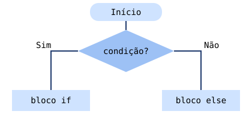

7. Estruturas condicionais if, else e else if
Conteúdos para estudo
Permitem executar código consoante uma condição.
int nota; cin >> nota; if (nota >= 18) cout << "Excelente"; else if (nota >= 10) cout << "Aprovado"; else cout << "Reprovado";
- a condição fica entre parênteses
- com várias instruções use
{ } else ifencadeia condições

Atividade 7 – “Maioridade e classificações”
Crie programas para verificar maioridade, positivos/negativos, aprovação e classificação.
Os dados são guardados automaticamente neste navegador.